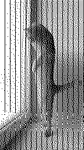
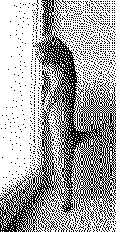
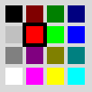
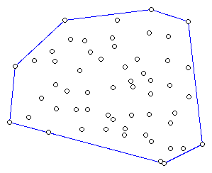

Zmiany na stronie — 2007
- 2007-09-06
- W artykule nt zastosowania rozkazów SIMD w kompresji wideo dodałem sekcję opisującą wykorzystanie rozkazów SSE4: MPSADBW oraz PHMINPOSUW.
- 2007-08-31
- SSE2 & string.h — pierwsza wersja biblioteki zawierająca implementację kilku funkcji ze string.h.
- 2007-08-09
- Ulepszona MMX-owa funkcja strcmp — zostało usunięte jedno niepotrzebne porównanie, a sama procedura nieco uproszczona. Szczegóły w stosownym artykule.
- 2007-06-28
W artykule Dodawanie z nasyceniem poprawiłem metodę nr 3 (MMX) dodawania pikseli 16-bitowych — wyleciały 4 nadmiarowe instrukcje (dwie błędne, dwie niepotrzebne).
Jest też dostępny przykładowy program zawierający metody pierwszą (x86) i trzecią (MMX). Program możne działać albo wsadowo i wówczas wykonuje wybraną procedurę n razy (profilowanie, pomiar wydajności) albo interaktywnie — ładuje wskazany obrazek PPM, wyświetla w oknie (X Window) i wykonuje dodawanie z nasyceniem.
- 2007-06-24
Liczący sobie już 5 lat artykuł Operacje na łańcuchach ASCII-Z w asemblerze został odświeżony i została dodana funkcja strchr.
Przy okazji... właściwie to „odświeżenie” było przy okazji, pojawiły się procedury przeznaczone dla GCC (inline asm): mmx_string.c.
- 2007-06-18
ttyscreenshot — do zrzucania zawartości konsoli linuksowej do pliku graficznego PNM; uwzględniane są bieżące kolory i załadowane fonty. Wymaga wyższych uprawień, przynajmniej możliwości odczytu /dev/vcsa* i /dev/tty* (i pewnie czegoś jeszcze...).
Przykład — zawartość konsoli na której program fbi_text modyfikuje fonty, aby przedstawić obrazek; ze zrzutów zostało wycięte czarne tło.
Zrzut konsoli po lewej: znaki na konsoli mają szerokość 9 pikseli (standardowo na kartach EGA/VGA — wyraźnie widać zakłócenia na wyświetlanym przez fbi_text obrazku). Zrzut konsoli po prawej: znaki o szerokości 8 pikseli (niestandardowe ustawienia, możliwość zmiany tylko z poziomu konta root; jak widać obrazek jest już przedstawiony bez zakłóceń).
 
- 2007-06-10
- Biblioteka/program do odczytu i zapisu plików dla GNU locate; napisana w Pythonie, wydana oczywiście na licencji BSD.
- 2007-04-05
- aspell-python — dostępna jest wersja całkowicie pythonowa, używająca modułu ctypes.
- 2007-03-22
- Moduł canvasvg umożliwia łatwy zapis zawartości canvas w pliku SVG. Wszystkie obiekty geometryczne są poprawnie zapisywane, także wygładzone łamane i wielokąty. Teksty także, za wyjątkiem wielowierszowych (atrybut width = 0). Obrazki oraz okna są pomijane.
- 2007-03-13
- Program SVGfrags zastępuje w istniejącym dokumencie SVG fragmenty tekstu, tekstem złożonym w (La)TeX-u — działa podobnie do znanego z LaTeXa pakietu psfrags. Poza zwykłym zastępowaniem tekstu, potrafi także wstawiać TeXowe fragmenty do prostokątów, przeskalować do żądanych rozmiarów itp.
- 2007-03-07
- pydvi2svg — dzięki nieocenionej pomocy i uwagom R (Chandra) Chandrasekhara pydvi2svg znacząco zyskał, że wspomnę tylko o łatwiejszej istalacji i użytkowaniu, konwersji fontów METAFONTowych (via mftrace) i wyliczaniu dokładnego pudełka otaczającego.
- reSTowe rozszerzenia — ulepszona dyrektywa math/cmath, m.in. nazwy funkcji są pisane czcionką prostą, liczby są tokenami (tj. x_{12} i x_12 są równoważne).
- Automatyczne rysowanie drzew — dodana metoda rysowania binarnych drzew pełnych (każdy węzeł ma dokładnie dwa następniki, liście znajdują się na jednym poziomie). Podejrzewam, że da się tę metodę uogólnić na drzewa pełne wyższych rzędów; do następnej bezsennej nocy — nierozstrzygnięte.
- Wypełnianie trójkątów i czworokątów wypukłych — dokładnie opisane wypełnianie czworokątów, oraz dodany przykładowy program.
- 2007-02-17
- Interaktywne demo algorytmu Cohena-Sutherlanda wykorzystujące SVG + Javascript — zadziała w nowych przeglądarkach (Firefox 1.5+, Opera 8+). Algorytm jest opisany na polskiej Wikipedii, a także we Wprowadzeniu do grafiki komputerowej Foleya, van Damma.
{kind=link}
- 2007-02-13
- Artykuł Automatyczne rysowanie dowolnych drzew został rozszerzony o przykładową, bardzo prostą i krótką, procedurę służącą do rysowania drzew binarnych (specjalny przypadek opisanej tam metody 1).
Jako suplement do artykułu Punkt wewnątrz wielokąta pojawiło się demo pokazujące w jaki sposób, po opisaniu wielokąta za pomocą drzew BSP, można klasyfikować punkty, tj. stwierdzać, czy leżą wewnątrz/na zewnątrz wielokąta.

- 2007-02-04
- Demonstracje algorytmu Bresenhama wykorzystujące JavaScript oraz
element canvas:
- rysowanie odcinka
- rysowanie okręgu
- rysowanie elipsy
- źródła: bresenham.js (procedury rysujące), bresenham-demo.js (procedury pomocnicze)
- Demonstracje algorytmu Bresenhama wykorzystujące JavaScript oraz
element canvas:
- 2007-01-06
Tkinterowe demo automatycznego rysowania drzew — program pozwala na interaktywną edycję drzewa (dodawanie węzłów, usuwanie poddrzew), a także zmianę podpisu węzła oraz jego koloru i kształtu: prostokąt, koło, prostokąt z zaokrąglonymi rogami (wykonanie tego ostatniego w Tkinterze jest niespecjalnie łatwe).

Szczegóły na stronie Automatyczne rysowanie drzew
Przy okazji napisałem minimalistyczną paletkę 16 HTML-owych kolorów tkcolorpicker.py — może się przydać również w innych projektach. (Tak, wiem że jest tkColorChooser ale nie odpowiadało mi).

- Algorytm Grahama (wyszukiwanie otoczki wypukłej zbioru punktów):
